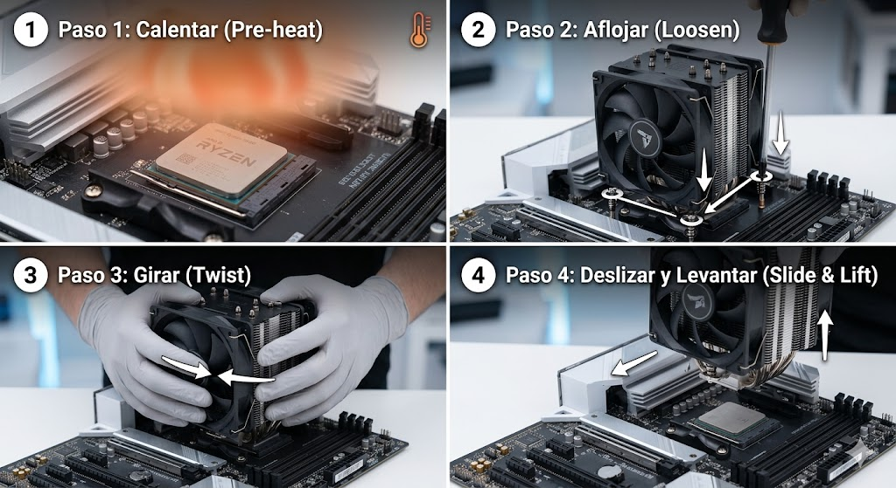

Cómo evitar que el procesador se pegue al disipador (Guía AM4/AM5)
Es una de las peores pesadillas de cualquier persona que arma o da mantenimiento a una PC: vas a quitar el disipador para limpiar o cambiar la pasta térmica, tiras de él, y ¡pum! El procesador AM4 sale arrancado del socket pegado a la base de cobre.
Esto pasa porque la pasta térmica vieja actúa como pegamento y el diseño de retención de AM4 (PGA) no bloquea el procesador por encima, solo sujeta los pines por los lados. Arrancar el procesador del socket por accidente puede doblar o romper los pines, dañando el componente de forma permanente. Si estás usando una plataforma AMD AM4 (como los Ryzen 3000 o 5000), el riesgo es extremadamente alto debido a su diseño de socket.
El Método Seguro de Extracción
A continuación, te mostramos el protocolo paso a paso que debes seguir para desmontar el sistema de refrigeración de forma 100% segura y libre de riesgos mecánicos.

No abras la PC estando fría. Enciende la computadora y ejecuta un juego pesado o un test de estrés (como Cinebench o Prime95) durante unos minutos. Esto ablandará la pasta térmica, reduciendo su efecto de "pegamento". APAGA y desconecta la PC por completo antes del siguiente paso.
Desatornilla el disipador en forma de "X" (un poco de cada esquina). No quites un tornillo por completo mientras los demás están apretados, ya que esto genera una presión desigual peligrosa sobre el procesador.
NUNCA tires del disipador hacia arriba directamente. Agarra firmemente el cuerpo del disipador y realiza giros leves hacia la izquierda y la derecha (como si fuera una perilla). Sentirás cómo la succión de la pasta térmica se rompe de inmediato.
Una vez que sientas que el disipador gira libremente, deslízalo ligeramente hacia un lado antes de levantarlo con suavidad. El procesador se quedará totalmente seguro dentro de su socket.
¿Qué hacer si ya se quedó pegado fuera de la PC?
Si el procesador ya salió pegado al disipador, no intentes palanquearlo con un destornillador o herramientas filosas. Usa una secadora de pelo para calentar la base de cobre del disipador durante un par de minutos. Luego, usando guantes de látex, gira el procesador con cuidado desde los bordes del circuito impreso (PCB) para despegarlo de lado deslizando.
Cómo prevenir que vuelva a suceder en el futuro
- Usa pastas térmicas de calidad: Las pastas térmicas ultra baratas o las que vienen preaplicadas de stock suelen resecarse mucho más rápido, convirtiéndose en una especie de cemento. Opta por marcas reconocidas (como Noctua NT-H1, Arctic MX-4/MX-6).
- Considera almohadillas térmicas de cambio de fase: Productos como el Honeywell PTM7950 o almohadillas de grafito no sufren este efecto de succión y ofrecen un rendimiento térmico excelente a largo plazo.
- Mantenimiento regular: No dejes la misma pasta térmica durante 5 años. Cambiarla cada 1 o 2 años evitará que se petrifique por completo bajo el bloque de refrigeración.